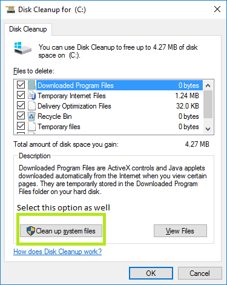
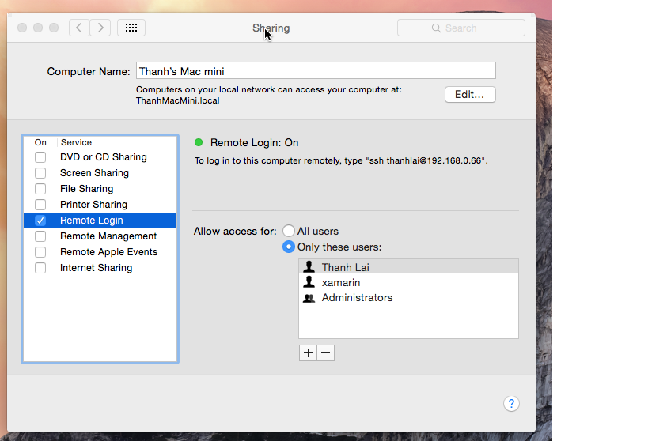
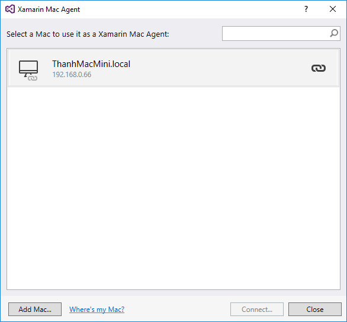
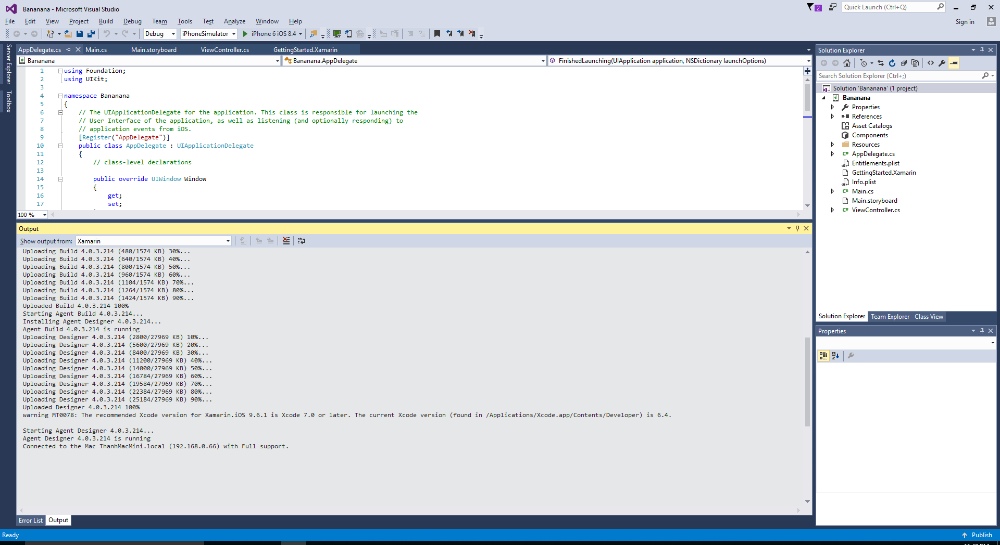

VirtualBox Settings
- Go to Devices → Network Settings... In the Adapter 1 tab, set Attached to: "Bridged Adapter", expand the Advanced section and select "Allow All" for the Promiscuous Mode
- Make sure the Devices → Connect Network Adapter option is connected/enabled/highlighted
Hackintosh Settings (Build Host machine)
- Open Sharing, enable "Remote Login"
- Delete 2 folders - "XMA" and "mtbs" located in ~/Library/Caches/Xamarin/(this is an optional step; in case you have failed to connect to your Hackintosh previously via Xamarin Mac Agent)
Windows/Visual Studio Settings
- Close all of the opening Visual Studio instances.
- Run the built-in Windows utility - Disk Cleanup (or you can use CCleaner to clean up all of the failed Xamarin temp, such as old credentials, server's IP cache, etc. from Visual Studio)

- Open Xamarin Mac Agent from Visual Studio, type in the IP or Mac's name from the VirtualBox machine (Under Sharing → Remote Login)


- Use your username to login (Type "whoami" in your Hackintosh's Terminal)
- Hopefully, you will see the similar success message with your configuration

Monday, April 11, 2016 @11:41 PM